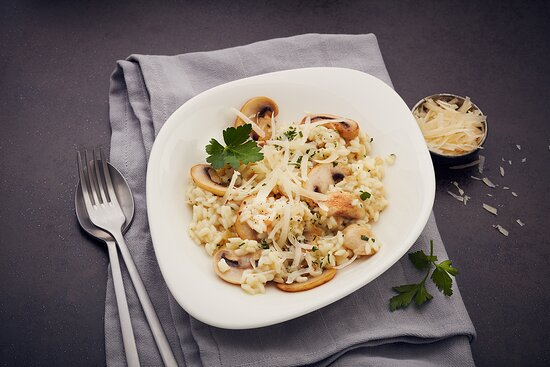

Spaghetti Bolognese

Ingredients: Spaghetti, ground beef, tomatoes, garlic, onions.
Instructions:
Put a large saucepan on a medium heat and add 1 tbsp olive oil.
Add 4 finely chopped bacon rashers and fry for 10 mins until golden and crisp.
Reduce the heat and add the 2 onions, 2 carrots, 2 celery sticks, 2 garlic cloves and the leaves from 2-3 sprigs rosemary, all finely chopped, then fry for 10 mins. Stir the veg often until it softens.
Increase the heat to medium-high, add 500g beef mince and cook stirring for 3-4 mins until the meat is browned all over.
Add 2 tins plum tomatoes, the finely chopped leaves from ¾ small pack basil, 1 tsp dried oregano, 2 bay leaves, 2 tbsp tomato purée, 1 beef stock cube, 1 deseeded and finely chopped red chilli (if using), 125ml red wine and 6 halved cherry tomatoes. Stir with a wooden spoon, breaking up the plum tomatoes.
Bring to the boil, reduce to a gentle simmer and cover with a lid. Cook for 1 hr 15 mins stirring occasionally, until you have a rich, thick sauce.
Add the 75g grated parmesan, check the seasoning and stir.
When the bolognese is nearly finished, cook 400g spaghetti following the pack instructions.
Drain the spaghetti and either stir into the bolognese sauce, or serve the sauce on top. Serve with more grated parmesan, the remaining basil leaves and crusty bread, if you like.
Margherita Pizza

Ingredients: Pizza dough, tomatoes, fresh mozzarella, basil.
Instructions:
Make the base: Put the flour into a large bowl, then stir in the yeast and salt. Make a well, pour in 200ml warm water and the olive oil and bring together with a wooden spoon until you have a soft, fairly wet dough. Turn onto a lightly floured surface and knead for 5 mins until smooth. Cover with a tea towel and set aside. You can leave the dough to rise if you like, but it’s not essential for a thin crust.
Make the sauce: Mix the passata, basil and crushed garlic together, then season to taste. Leave to stand at room temperature while you get on with shaping the base.
Roll out the dough: if you’ve let the dough rise, give it a quick knead, then split into two balls. On a floured surface, roll out the dough into large rounds, about 25cm across, using a rolling pin. The dough needs to be very thin as it will rise in the oven. Lift the rounds onto two floured baking sheets.
Top and bake: heat the oven to 240C/220C fan/gas 8. Put another baking sheet or an upturned baking tray in the oven on the top shelf. Smooth sauce over bases with the back of a spoon. Scatter with cheese and tomatoes, drizzle with olive oil and season. Put one pizza, still on its baking sheet, on top of the preheated sheet or tray. Bake for 8-10 mins until crisp. Serve with a little more olive oil, and basil leaves if using. Repeat step for remaining pizza.
3. Risotto al Funghi
Ingredients: Arborio rice, mushrooms, onions, Parmesan cheese.
Instructions:
Start by frying the mushrooms with garlic and thyme until golden brown. Set it aside.
Fry the onion, garlic, and risotto rice for two minutes (keep stirring). Fry the rice because this gives the rice a roasted nutty taste.
Pour in the white wine.
And the stock ladle by ladle. Then, when you have added the new liquid, stir well and let it cook until the stock is creamy.
Put the fried mushrooms, Parmesan cheese, tapenade, and some extra butter into the pan.
Mix through the risotto. Let it stand for another two minutes. Serve right away.